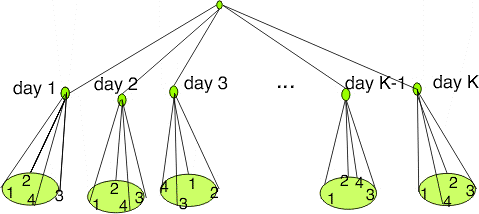

|
2.
Measurement Process Characterization
2.1. Characterization 2.1.2. What is a check standard?
|
|||
| Schedule for making measurements | A schedule for making check standard measurements over time (once a day, twice a week, or whatever is appropriate for sampling all conditions of measurement) should be set up and adhered to. The check standard measurements should be structured in the same way as values reported on the test items. For example, if the reported values are averages of two repetitions made within 5 minutes of each other, the check standard values should be averages of the two measurements made in the same manner. | ||
| Exception | One exception to this rule is that there should be at least J = 2 repetitions per day. Without this redundancy, there is no way to check on the short-term precision of the measurement system. | ||
| Depiction of schedule for making check standard measurements with four repetitions per day over K days on the surface of a silicon wafer with the repetitions randomized at various positions on the wafer |
 K days - 4 repetitions2-level design for measurement process |
||
| Case study: Resistivity check standard for measurements on silicon wafers |
The values for the check standard should be recorded along
with pertinent environmental readings and identifications for
all other significant factors. The best way to record this
information is in one file with one line or row (on a
spreadsheet) of information in fixed fields for each check
standard measurement. A list of typical entries follows.
|
||